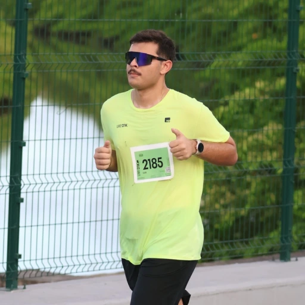

Luiz Marcolino
Desenvolvedor backend e co-founder do Poppings
Sou co-founder do Poppings, onde construo uma plataforma para gestão de processos empresariais através de POPs. Utilizo Next.js para transformar processos complexos em procedimentos simples e organizados.
Entre meus interesses estão o desenvolvimento backend com Java e Spring Boot, além de cloud computing com AWS.
Explore meus projetos no GitHub ou entre em contato pelo LinkedIn